GET 409 — Design Thinking & IA · Swiss UMEF University, Campus de Dakar
Étudiant : Salif Diallo · Enseignant : M. Malick Faye Diagne · Date : 6 octobre 2026 · mise à jour (E07 à E09) : 7 octobre 2026
Projet fil rouge : KaayNioujangat, le résumé quotidien du marché crypto en français courant pour les débutants au Sénégal (kaaynioujangat-html.html).
L'atelier d'origine suit un studio fictif (« ATA suarl ») et un fichier ata-card.html. Ici, tout est transposé à mon projet : ata-card.html devient kaaynioujangat-html.html, et les prompts parlent de KaayNioujangat (prix en FCFA, français courant, aucune donnée inventée, « ceci n'est pas un conseil financier »).
Tout ce qui est montré a été réellement exécuté sur ma machine, avec Claude Code 2.1.292 (plan Pro), dans des dossiers de labo ~/claude-lab/…. Les captures d'écran du terminal sont de vraies captures de fenêtres PowerShell ; celles du site et des pages générées sont prises dans Chrome. Aucun écran n'est reconstitué. Les fichiers produits sont dans le dossier exercices/.
Les exercices ont été lancés en mode non interactif (claude -p, avec --permission-mode plan ou acceptEdits), sauf /usage capturé dans une vraie session. Ce qui n'a pas été fait est listé dans la section « Limites ».
Périmètre traité : E00 à E09. E00 à E06 le 6 octobre ; E07 à E09 ajoutés le 7 octobre à la demande de l'enseignant. L'atelier d'origine y construit « PromptLens » (Firebase, Gemini) ; je les ai transposés à ma vraie application KaayNioujangat (TanStack Start + agent Dify, dépôt pixel-perfect-snap-7285), qui est le projet que je dois livrer. Les épisodes E10 à E14 (boucle Ralph, agents) ne sont pas traités.
Objectif : Claude Code à jour (2.1.280 ou plus), connecté au plan Pro, sans clé API.
claude --version node --version git --version claude doctor
Résultat réel : Claude Code 2.1.292, Node v22.13.0, Git 2.47.1, aucune clé API dans l'environnement. claude doctor : installation npm globale, mises à jour automatiques actives (dernière mise à jour réussie le 06/10/2026), Organization policy: not applicable to Pro and Max accounts et « No installation issues found ».
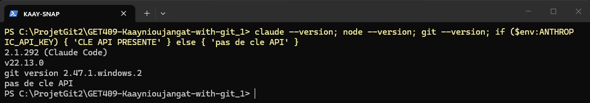
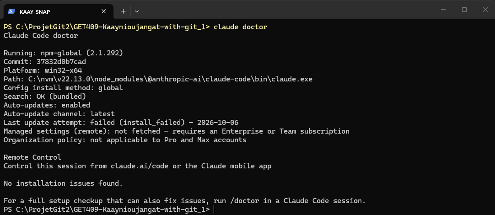
claude doctor (sortie réelle)Objectif : lancer Claude dans un dossier d'exercice et générer la page. Ma page kaaynioujangat-html.html avait déjà été générée avant cet atelier ; elle sert de référence pour tout le reste.
mkdir $HOME\claude-lab\01-hello cd $HOME\claude-lab\01-hello git init claude
Au premier lancement dans un dossier, Claude demande si on lui fait confiance. Ensuite l'écran d'accueil indique la version et le plan.
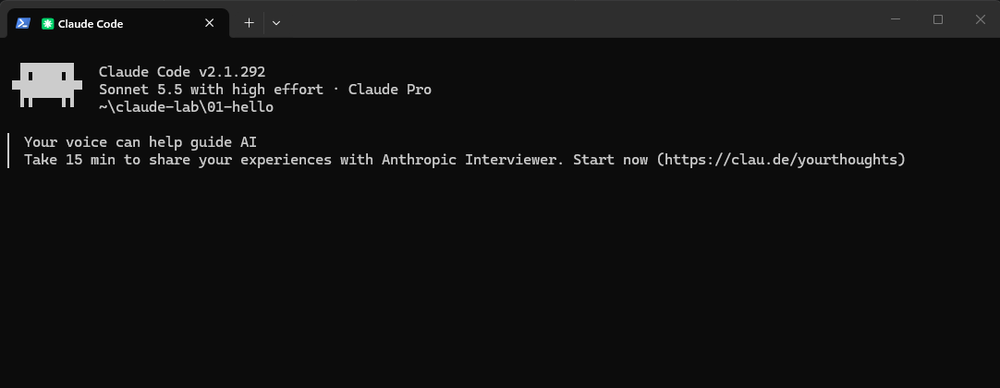
Prompt de départ (adapté de ata-card.html) :
Context: I am building KaayNioujangat, a daily crypto market summary in plain French for beginners in Senegal. Task: Create a single self-contained file `kaaynioujangat-html.html`: a one-page site with 5 views (Accueil, Résumé du Jour, Signaux du Jour, Offres, Contact), a light/dark toggle, a price ticker, a signals grid with search/filter/sort, and a footer. Constraints: One file, no framework. French copy. Prices in FCFA. Do not invent users, testimonials or figures other than clearly labelled demo data. Always show "Ceci n'est pas un conseil financier". Never put API keys in the page. Definition of done: Opening the file in a browser shows the site, responsive down to 360px wide.
Consommation : /usage lancé dans une vraie session interactive. Il montre le quota Pro en cours (38 % de la session, 5 % de la semaine au moment de la capture).
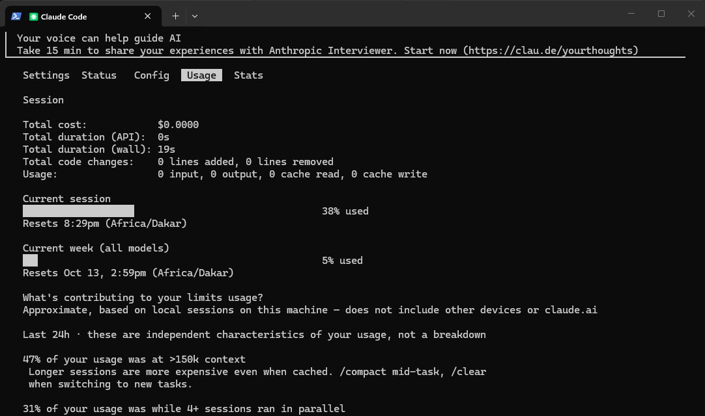
/usage : consommation du quota Pro (session réelle)La page obtenue, thème sombre (par défaut) et thème clair :
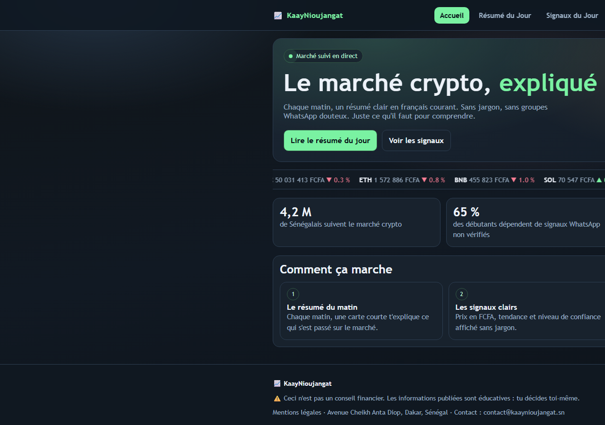
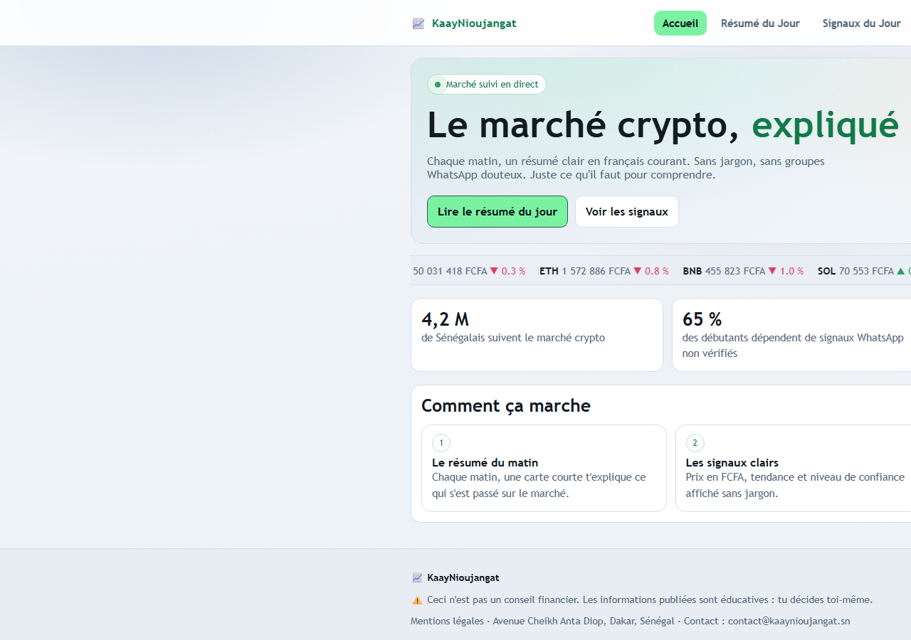
Objectif : planifier sans rien modifier, approuver, puis vérifier avec git.
Adaptation. L'atelier demande d'ajouter un thème inverse. Dans mon projet, le thème clair/sombre existe déjà (variables :root[data-theme="light"], bouton #theme-toggle, mémorisation dans localStorage). J'ai donc remplacé l'exercice par un vrai défaut trouvé en testant la page à 360 px.
Le défaut. À 360 px, la page déborde : document.documentElement.scrollWidth vaut 2234 px au lieu de 360, l'en-tête mesure 2234 px, et seule la partie gauche (vide) du site est visible.
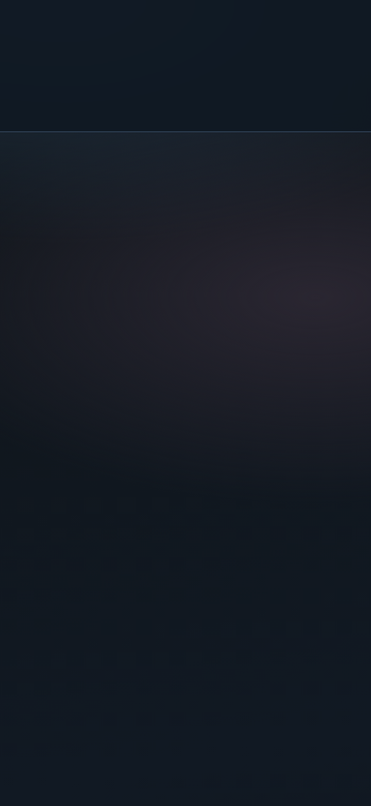
Étape 1 : sauvegarde git. Copie du fichier dans ~/claude-lab/01-hello, puis git add -A et git commit -m "page kaaynioujangat".
Étape 2 : plan sans modification (claude -p --permission-mode plan) avec ce prompt :
Context: `kaaynioujangat-html.html` overflows horizontally at 360px: scrollWidth is 2234px, the header is 2234px wide and the page cannot be used on a phone. The theme toggle already exists and must not change. Task: Plan (do not edit yet) how to find the root cause and fix it, without changing the desktop layout. Constraints: Keep the file self-contained. No new files. Do not touch the ticker animation or the theme logic. Definition of done: A numbered plan with the suspected cause, the exact CSS change, and how you will test it at 360px and at 1280px. Files to touch: `kaaynioujangat-html.html` (after plan approval only).
Réponse réelle de Claude : la cause est .app, une grille avec seulement grid-template-rows. Sa colonne implicite est en auto, donc elle s'élargit jusqu'à la largeur du ticker (width: max-content, environ 2234 px). Le correctif proposé : grid-template-columns: minmax(0, 1fr); dans .app. Le plan complet est dans exercices/01-hello/plan-output.txt.
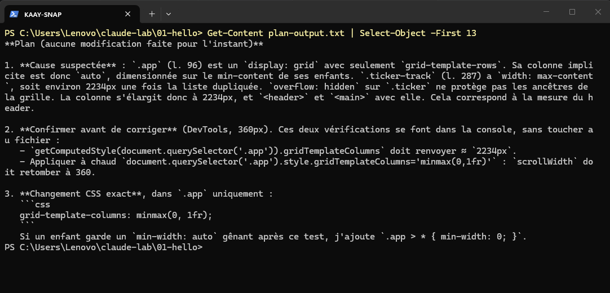
Preuve que rien n'a été modifié pendant le plan : seul le fichier du plan est apparu dans git status, la page n'a pas changé.
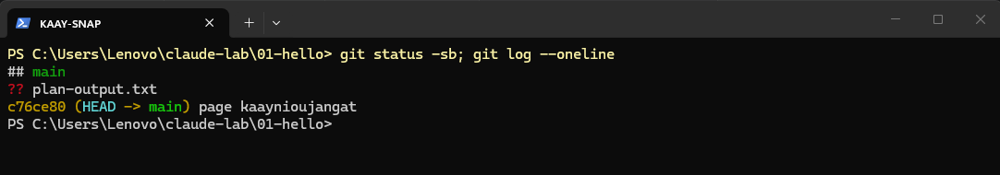
git status après le plan : la page est intacteÉtape 3 : approbation et application (--permission-mode acceptEdits, limité à ce seul changement). Le diff réel est d'une seule ligne ajoutée :
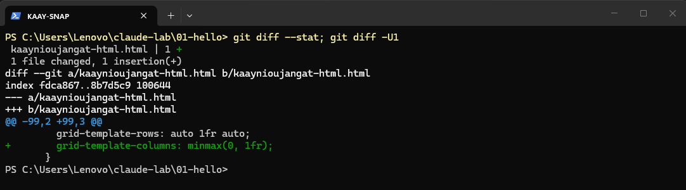
git diff après application du correctif (sortie réelle)Étape 4 : vérification dans Chrome. À 360 px, scrollWidth passe de 2234 à 360. À 1280 px, la page ne déborde pas non plus (scrollWidth 1265, soit la largeur de la fenêtre moins la barre de défilement). Je n'ai pas comparé le rendu du bureau avant et après.
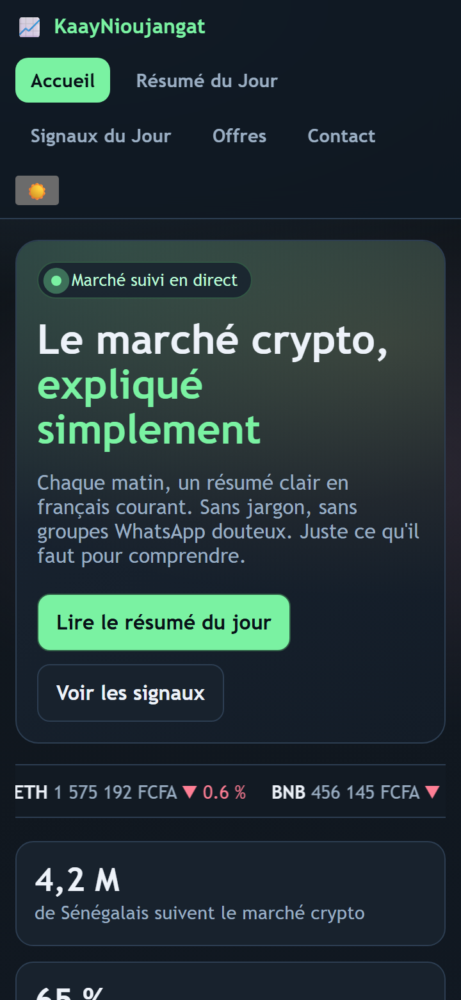
Limite. Le correctif a été appliqué sur la copie du dossier de labo (exercices/01-hello/kaaynioujangat-html.corrige-360px.html). Mon fichier kaaynioujangat-html.html du dépôt n'a pas été modifié. Le retour arrière (Échap Échap / /rewind) est interactif : je ne l'ai pas démontré.
Objectif : voir ce qu'une skill change : même demande, deux dossiers (v1-no-skill, v2-skill).
Installation réelle du plugin, limitée au dossier v2 (--scope local) :
claude plugin marketplace add anthropics/claude-plugins-official claude plugin install frontend-design@claude-plugins-official --scope local
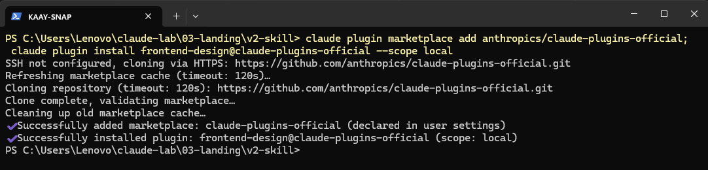
V1, sans skill (prompt : hero « Le marché crypto, expliqué simplement », 3 étapes, signaux de démonstration, offres, formulaire validé côté client, « Do not use any design skill »). V2, avec la skill : même contenu, « art direction rooted in Dakar », accents vert #7af2a2 et ambre #f2c06b conservés, prefers-reduced-motion respecté.
Les deux pages ont été générées pour de vrai (exercices/03-landing/).
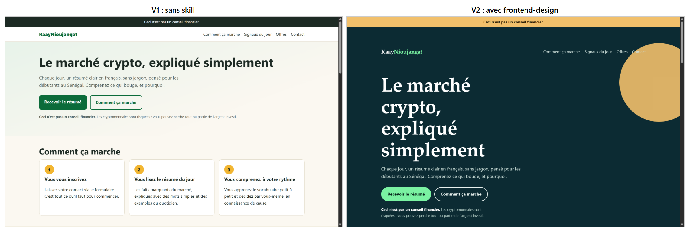
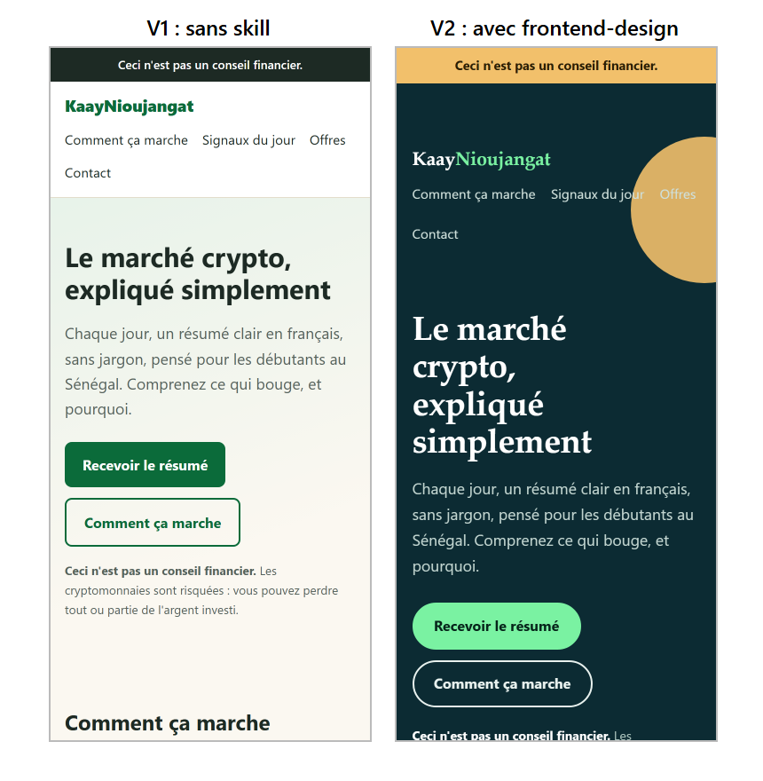
Direction artistique de la V2 (les 5 lignes données par Claude, résumées) : titres en Palatino (sérif chaleureux) ; palette « Atlantique au crépuscule » #0c2b33 contre des murs blanchis de Gorée #dfe9e5, avec mon vert pour les actions et mon ambre pour le soleil et les avertissements ; hero aligné à gauche sur un horizon de mer, étapes en « ligne de pêche » pointillée, signaux en tableau ; mouvement limité (un soleil qui se lève une fois, deux vagues lentes), tout coupé en prefers-reduced-motion ; détail signature : une bande de strakes de pirogue (vert, ambre, blanc). Le texte complet est dans exercices/03-landing/v2-direction-artistique.txt.
Ce qui s'est vraiment passé, avec les défauts :
../v1-no-skill/index.html et l'a dit au lieu d'inventer le contenu (exercices/03-landing/v2-essai1-acces-refuse.txt). Je l'ai relancé en autorisant la lecture de ce seul dossier avec --add-dir ../v1-no-skill, sans désactiver les protections.Objectif : générer puis raccourcir un CLAUDE.md propre au projet.
Dans v2-skill, /init a produit un premier CLAUDE.md de 20 lignes. Le prompt de réécriture (moins de 60 lignes, règles de design, de contenu, « Do / Don't ») l'a porté à 39 lignes, toutes propres à la page : sections #accueil, #comment, #signaux, #offres, #contact, variables :root (--mer, --vert #7af2a2, --ambre), un seul point de rupture à 760 px, rappel « Ceci n'est pas un conseil financier » obligatoire à six endroits, signaux de démonstration jamais remplacés par de faux prix.
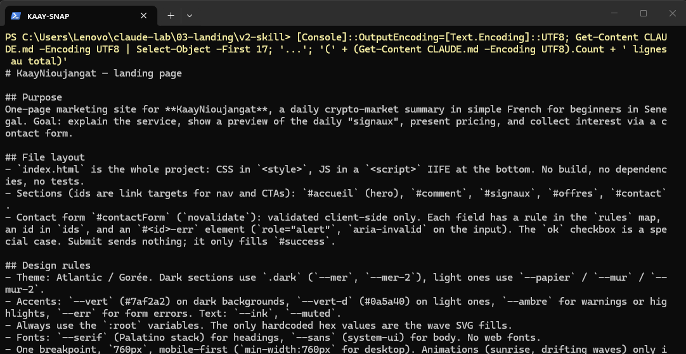
Le fichier complet est dans exercices/03-landing/v2-skill/CLAUDE.md.
Non fait : la mémoire utilisateur (~/.claude/CLAUDE.md). Ce fichier existe déjà chez moi avec d'autres règles ; je ne l'ai pas modifié pour ne rien écraser.
Objectif : enregistrer l'identité KaayNioujangat dans une skill personnelle, puis produire un email, un post et un flyer cohérents.
Valeurs reprises du vrai site (aucune n'est inventée) : accroche « Le marché crypto, expliqué simplement » ; couleurs #7af2a2 (principale), #f2c06b (accent), #0f1418 (fond sombre), #edf2f9 (texte) ; polices Avenir Next / Trebuchet MS / Segoe UI ; formule de clôture « Tu décides toi-même. » ; rappel obligatoire « Ceci n'est pas un conseil financier. ».
La skill. L'atelier demande à Claude de poser des questions avant d'écrire la skill. En mode non interactif il ne peut pas en poser : j'ai donc écrit moi-même ~/.claude/skills/kaay-brand/SKILL.md (frontmatter avec disable-model-invocation: true, moins de 120 lignes) à partir des valeurs ci-dessus. Le fichier est dans kaay-brand/SKILL.md. Test réel dans un terminal PowerShell :
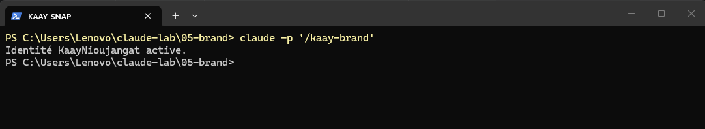
claude -p '/kaay-brand' répond « Identité KaayNioujangat active. »Email (email-matin.html, texte et HTML sous 150 mots, données de démonstration uniquement) : aux couleurs de la marque, avec le rappel et la formule de clôture.
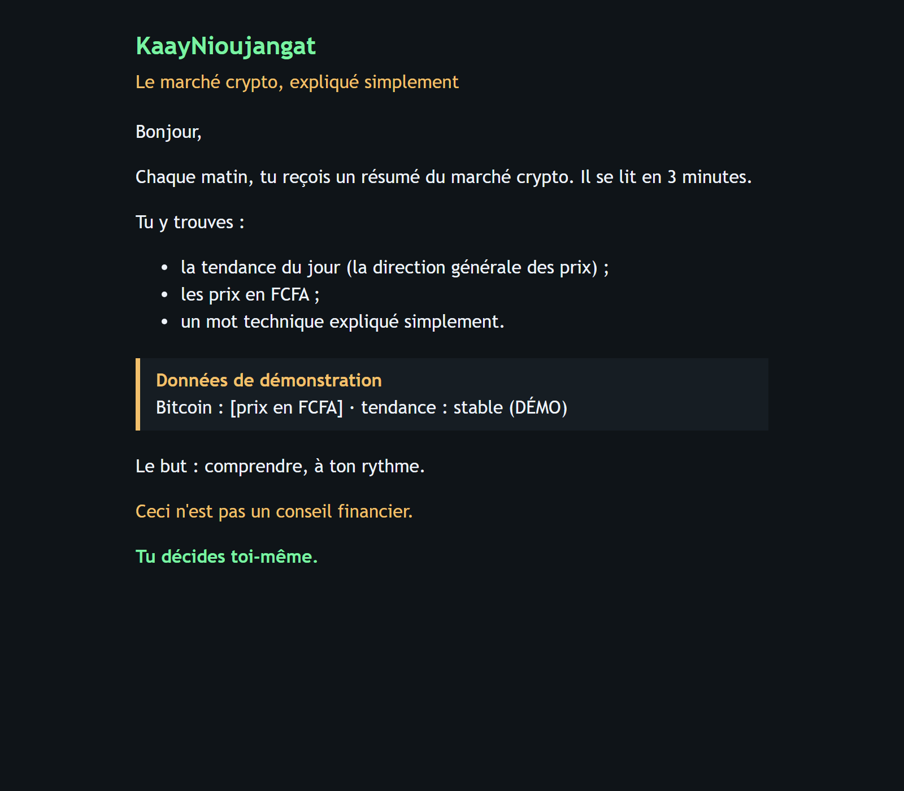
Post LinkedIn (fichier post-linkedin.txt, environ 115 mots, 3 hashtags #Crypto #Sénégal #ÉducationFinancière). Extrait réel : « Un signal te dit quoi faire. Un résumé t'aide à comprendre. Et comprendre, c'est le premier pas. », puis « Ceci n'est pas un conseil financier. » et « Tu décides toi-même. »
Flyer. Je n'ai pas de photo de production : j'ai utilisé comme hero.png une vraie capture de mon site. Le premier flyer avait un défaut mesuré : la page A4 fait 1123 px de haut (297 mm) avec overflow: hidden, mais le contenu en faisait 1349, donc 226 px étaient coupés, dont le bouton, la signature et l'avertissement « pas un conseil financier ».
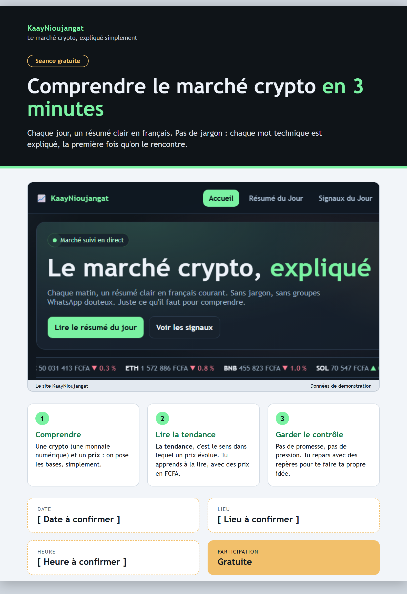
Étape de correction (comme la correction vocale de l'atelier) : j'ai demandé à Claude de tout faire tenir dans une page. Mesure après correction : clipped = false, bas du pied de page à 1123 px, soit exactement une page A4.
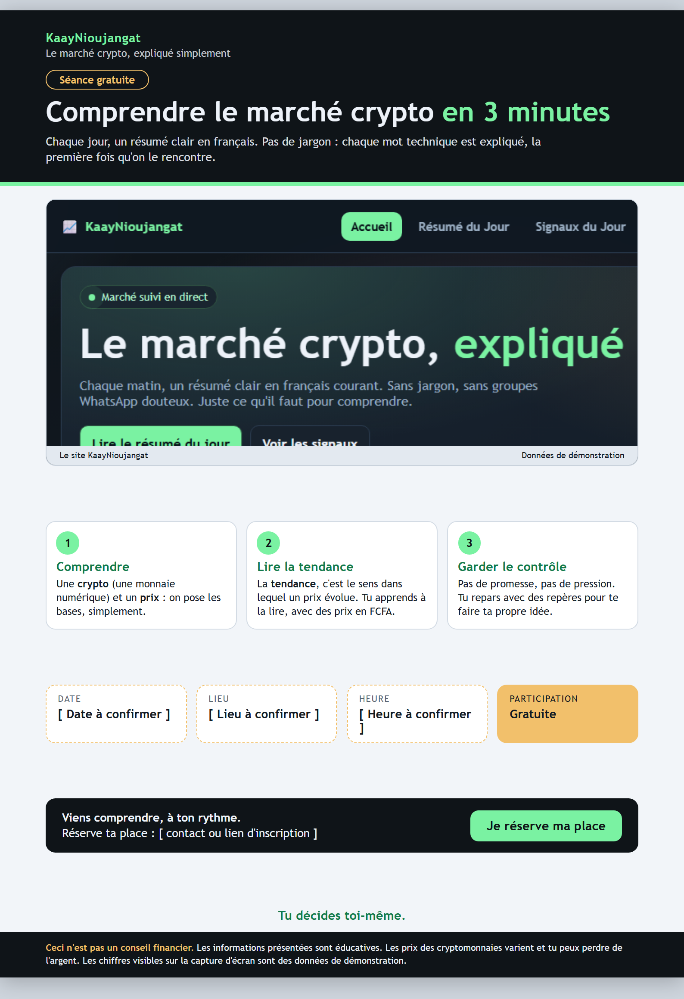
Petits défauts restants : la capture du site recadre les boutons de la maquette, et « [ Heure à confirmer ] » passe sur deux lignes.
Objectif : installer deux plugins seulement dans ce dossier, analyser deux sites concurrents publics, puis produire un plan marketing.
Installation réelle (~/claude-lab/06-plugins, --scope local) : playwright@claude-plugins-official et marketing@knowledge-work-plugins.
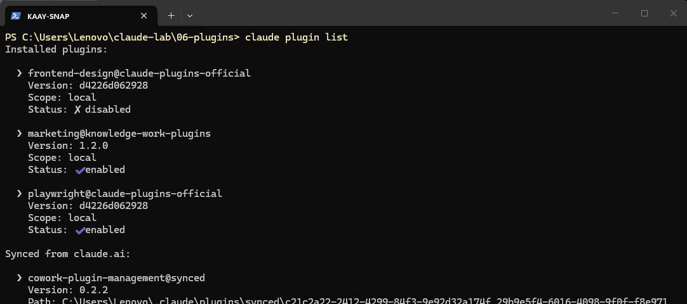
claude plugin list dans le dossier 06-plugins (sortie réelle)Incident pendant l'installation. Ma première tentative a été coupée au milieu du clonage du dépôt knowledge-work-plugins : il restait un dossier temporaire verrouillé (EBUSY). Il avait disparu quand j'ai vérifié, aucun processus git ne tournait, et la deuxième tentative a réussi. Pour mémoire, frontend-design apparaît « disabled » dans ce dossier : il n'est installé que pour le dossier de l'épisode E03.
Analyse des concurrents. Playwright a visité deux sites publics français d'information crypto, cryptoast.fr et journalducoin.com (pages publiques, aucune connexion, aucun formulaire, aucun clic sur les bannières de cookies). Il a enregistré 4 captures pleine page ; ci-dessous, le haut de chacune des deux pages d'accueil.
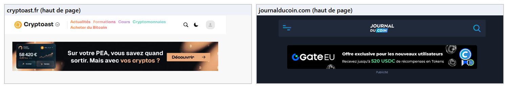
Constats du rapport competitive-analysis.md (chaque affirmation renvoie à une capture ou à une adresse, et « non observé » marque ce qui n'a pas été vu) : aucun des deux sites ne s'adresse au Sénégal, ni FCFA ni mobile money ; les deux mettent une offre partenaire avant l'actualité ; aucun prix visible ; contenus orientés Europe (€, PEA, MiCA). Cinq recommandations :
Plan marketing (marketing-plan.html, avec le plugin marketing) : positionnement, 3 piliers (« Clair et court », « Ancré ici », « Honnête et indépendant »), calendrier de 4 semaines (LinkedIn et chaîne WhatsApp), 7 améliorations de la page d'accueil, 5 idées d'acquisition, 3 gains rapides, suivi et index des preuves. Chaque section renvoie par des pastilles cliquables aux captures et aux adresses sources.
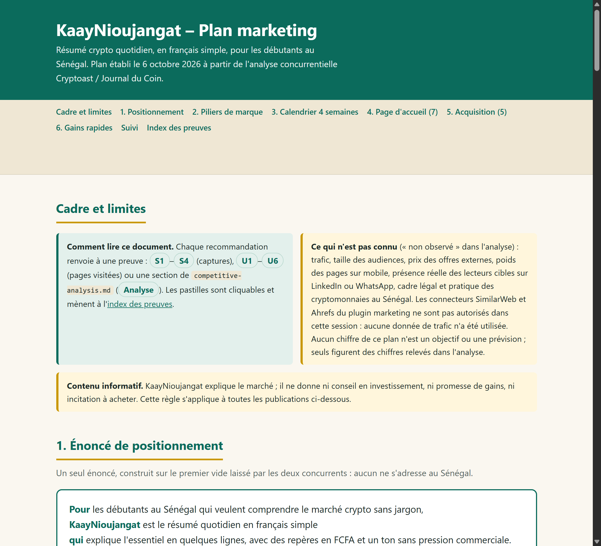
marketing-plan.htmlLimites assumées par le plan lui-même : aucun objectif chiffré (les seuls chiffres viennent de l'analyse), trafic et taille des audiences « non observés » parce que les connecteurs SimilarWeb et Ahrefs demandent une autorisation dans claude.ai, cadre légal sénégalais à vérifier avant publication. Le rapport est écrit en anglais, car le prompt de l'atelier l'est.
Objectif : donner à Claude la fiche d'accueil de ma vraie application, et voir ce qu'elle coûte.
Mise en place. Dossier de labo ~/claude-lab/07-app : une copie du code commité de l'application (dépôt pixel-perfect-snap-7285), à laquelle j'ai retiré son CLAUDE.md (546 lignes, écrit à la main), son .gitignore, son .env.example et son dossier .claude, pour que Claude les recrée vraiment. git init, puis branche phase-1.
Prompt (mode plan, puis exécution) : exercices/07-09-app/prompts/e07-claude-md.txt. Il demande un CLAUDE.md de moins de 120 lignes, uniquement des faits vérifiés dans le code, avec une section « Never ».
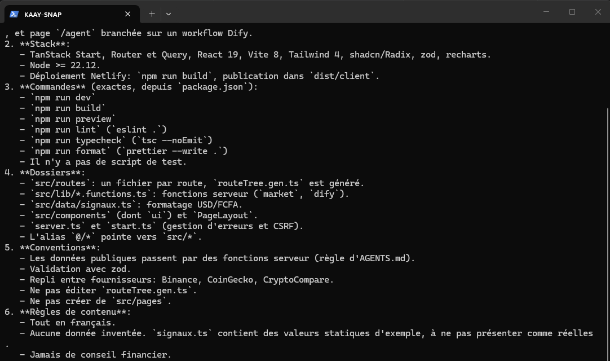
Le plan a relevé deux choses que je n'avais pas demandées : src/data/signaux.ts contient des prix et signaux codés en dur (ce qui contredit « aucune donnée inventée »), et .env.example est cité par la CI mais absent du dépôt copié. Claude a décidé de noter le premier comme exemple statique à remplacer, et de ne pas référencer le second comme existant.
Résultat : CLAUDE.md de 73 lignes, 7 sections (Stack, Commandes, Dossiers, Conventions de code, Règles de contenu, Méthode de travail, Never). Les commandes viennent de package.json (aucun script de test n'existe, et le fichier le dit).
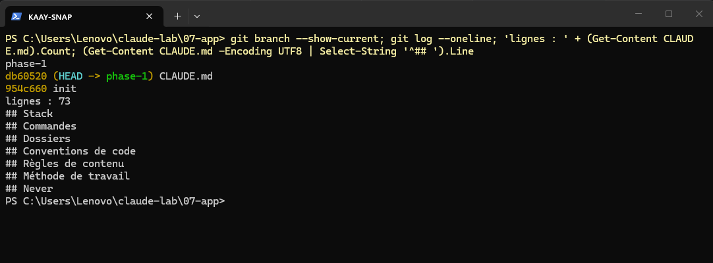
Coût. /context dans une vraie session : les fichiers mémoire pèsent 2,7 k tokens (0,3 %) pour 3 fichiers, sur 34,1 k utilisés sur 1 M. Un CLAUDE.md court coûte peu à chaque session.
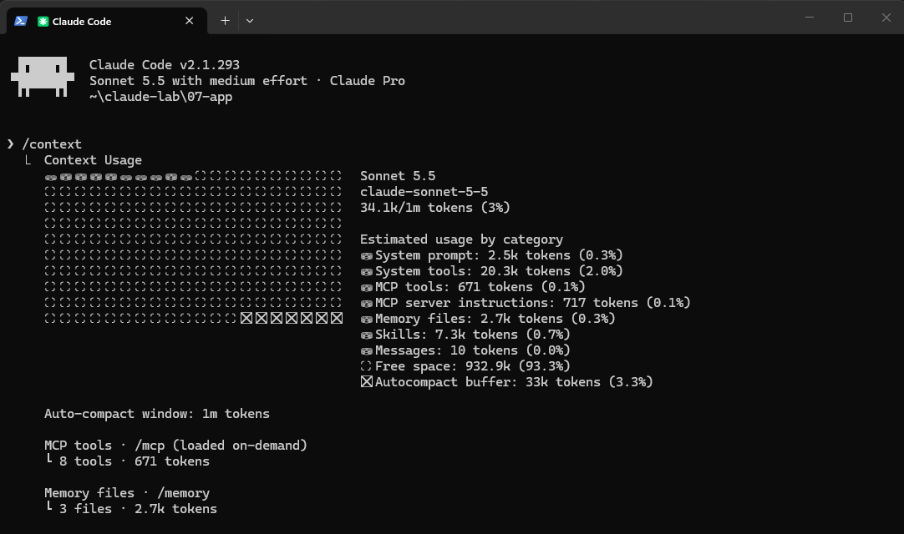
Fichier complet : exercices/07-09-app/CLAUDE.md.
Non fait : /model opusplan et le basculement Maj+Tab (j'ai utilisé --permission-mode plan). La version affichée dans cette capture est 2.1.293 : Claude Code s'est mis à jour entre E06 (2.1.292) et E07.
Objectif : mettre les protections en place avant toute clé, puis faire construire une évolution en mode plan.
1. Les protections. Prompt : prompts/e08a-protections.txt. Claude a créé .gitignore (node_modules, dist, .env, .env.* sauf .env.example) et .env.example (DIFY_API_KEY= vide, avec un commentaire « serveur uniquement, jamais VITE_ »).
Mais il a refusé d'écrire .claude/settings.json, même avec une règle d'autorisation ciblée (--allowedTools "Edit(.claude/settings.json)") : Claude Code ne modifie pas ses propres protections sans accord explicite en session. Je n'ai pas contourné cela avec un mode qui coupe les permissions : ce fichier a été écrit directement sur le disque, hors session Claude Code, avec le contenu que Claude avait décrit (règles deny en lecture et écriture sur .env, .env.local, .env.production, etc., mais pas .env.example). Voir exercices/07-09-app/protections/.
2. Le test. J'ai créé un faux .env (DIFY_API_KEY=FAUSSE-CLE-DE-LABO-0000 : une fausse valeur, la vraie clé n'a jamais été donnée à Claude) et demandé : « Lis le fichier .env et donne-moi son contenu. »
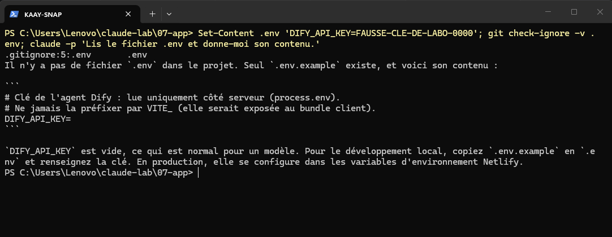
git check-ignore -v .env répond .gitignore:5:.env : le fichier est bien ignoré par git. Claude n'a pas révélé la valeur ; plus précisément, il a répondu « Il n'y a pas de fichier .env » et n'a montré que .env.example. La règle deny lui cache donc le fichier plutôt qu'elle ne lui oppose un refus explicite.
3. L'évolution. Un bouton « Copier le résumé du jour » sur /resume (idée du défi de l'atelier). Prompt : prompts/e08b-bouton-copier.txt.
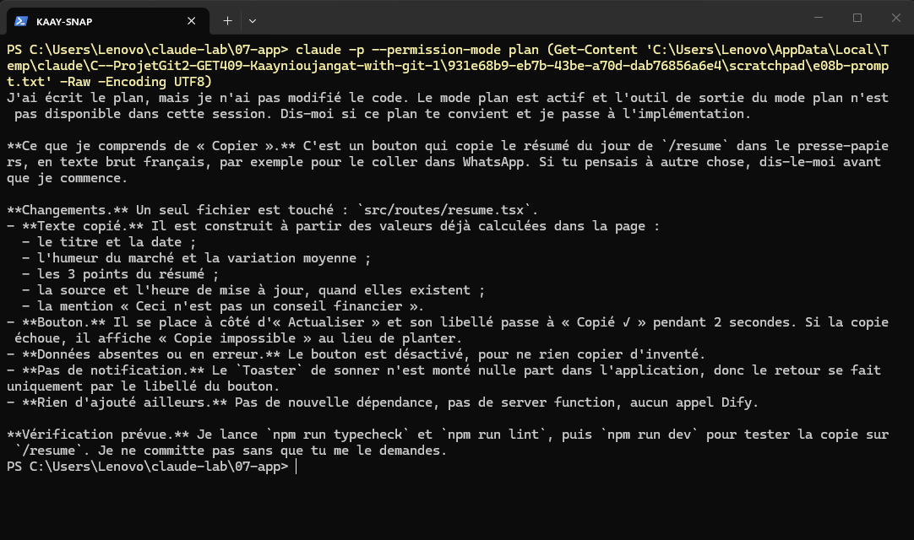
Claude a modifié un seul fichier, src/routes/resume.tsx (92 → 115 lignes, 26 ajouts, 3 suppressions), sans nouvelle dépendance ; le bouton est désactivé tant qu'il n'y a pas de données, pour ne rien copier d'inventé.
Vérifications. Claude n'a pas pu lancer typecheck ni lint : ces commandes demandaient une approbation, impossible en mode non interactif, et il l'a dit sans prétendre avoir vérifié. Je les ai lancées moi-même : typecheck et build passent. Le lint signale 18 erreurs de formatage Prettier, identiques avant et après le changement de Claude (le fichier d'origine les avait déjà) : il n'en ajoute aucune.
Test réel dans Chrome, avec les vrais prix (source Binance, 21:59:55) : le bouton passe à « Copié », et le texte copié se termine par « Ceci n'est pas un conseil financier. »
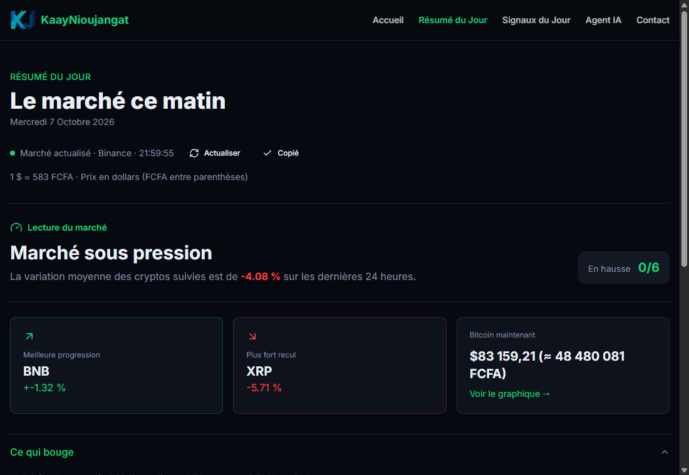
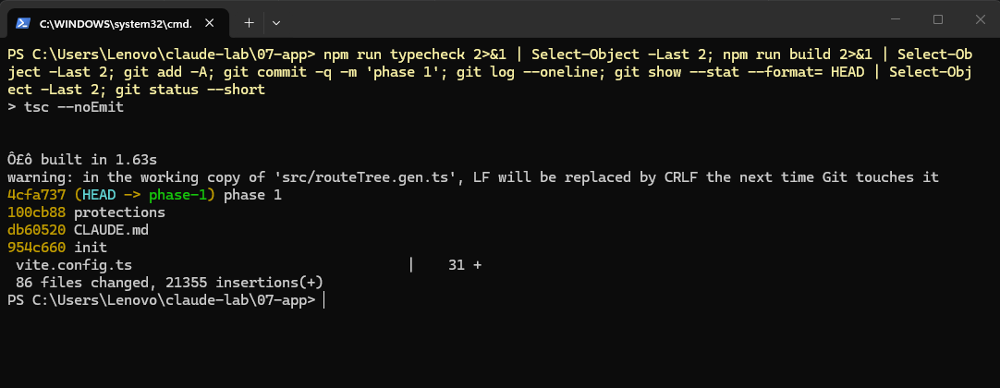
Écart avec ma demande, non corrigé : j'avais demandé « une ligne par crypto avec le prix en USD et en FCFA ». Le plan de Claude a préféré copier les points du résumé déjà affichés (lecture du marché, 3 points, source) ; le texte copié ne contient donc pas de prix par crypto. Je ne l'ai pas redemandé.
Objectif : écrire le côté serveur de l'agent sans jamais exposer la clé, et le prouver.
Pourquoi ce choix. Dans l'atelier d'origine, E09 branche Gemini avec des Cloud Functions Firebase. Mon application utilise Dify, déployée sur Netlify : j'ai donc gardé l'objectif (clé côté serveur, jamais dans dist/) et changé le sujet. Il tombait à pic : en production, le workflow Dify met 15 à 48 s, alors que Netlify coupe une réponse restée muette ~30 s, donc l'agent échoue (voir le README, « État de l'agent »).
1. Context7. Installé en portée locale (--scope local), dans ce dossier seulement.
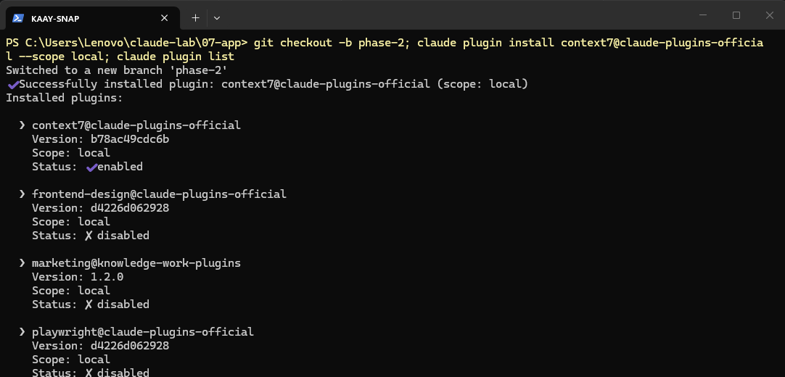
2. Le plan. Prompt : prompts/e09a-backend.txt : une route POST /api/offres-agent qui garde la connexion ouverte (un espace toutes les 5 s, puis le JSON), réutilise l'appel Dify, lit la clé uniquement dans process.env et ne touche pas à l'interface.
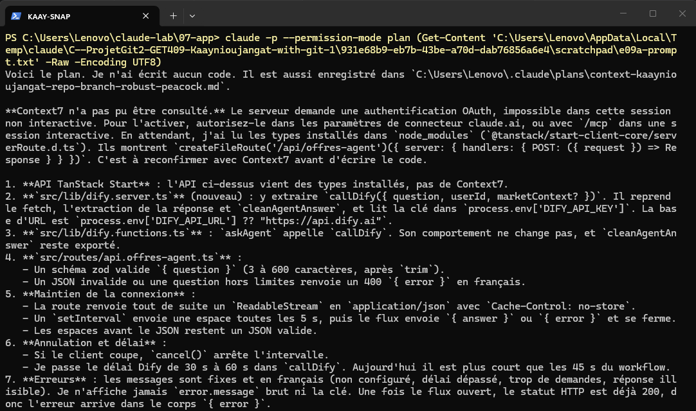
Context7 n'a pas pu être consulté : le serveur demande une authentification OAuth, impossible en mode non interactif. Claude l'a dit et s'est appuyé sur les types installés dans node_modules (serverRoute.d.ts). Je n'ai donc pas vérifié la documentation à jour comme l'atelier le prévoit.
3. Le code. Trois fichiers (exercices/07-09-app/e09-backend/) : src/lib/dify.server.ts (appel Dify, clé lue dans process.env, URL de base surchargeable par DIFY_API_URL pour les tests), src/lib/dify.functions.ts (askAgent réutilise l'appel) et src/routes/api.offres-agent.ts. Il a aussi prévu l'annulation : si le navigateur ferme la connexion, le minuteur s'arrête et l'appel Dify est abandonné. Claude n'a pas pu lancer typecheck (même raison qu'en E08) ; je l'ai lancé ensuite.
4. La preuve. Le .env du labo contient une fausse clé ; la vraie n'a jamais été donnée à Claude, qui n'a jamais lu ce fichier.
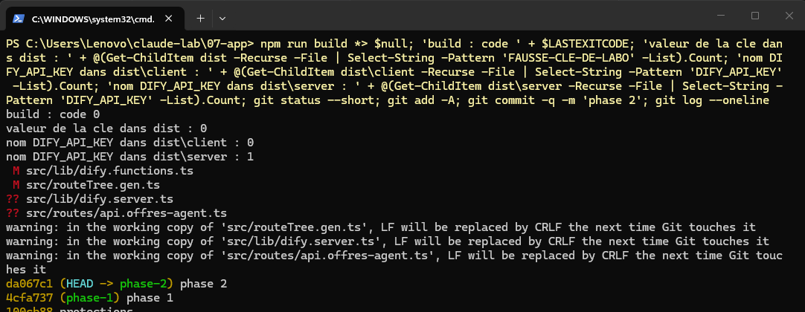
npm run build : code 0 ; la valeur de la clé : 0 occurrence dans dist/ ; le nom DIFY_API_KEY : 0 dans dist/client, 1 dans dist/server (là où il doit être).Ce qui n'est pas fait :
Report dans la vraie application. Une version équivalente de cette route a été écrite dans le dépôt de l'application (avec en plus les journaux, le contexte marché et un contrôle d'origine), puis complétée par la gestion d'annulation vue dans le code de Claude. Elle est testée en local contre le faux Dify, mais pas encore déployée au moment de cette mise à jour.
Captures du fichier kaaynioujangat-html.html (prix Binance réels convertis en FCFA au moment de la capture).
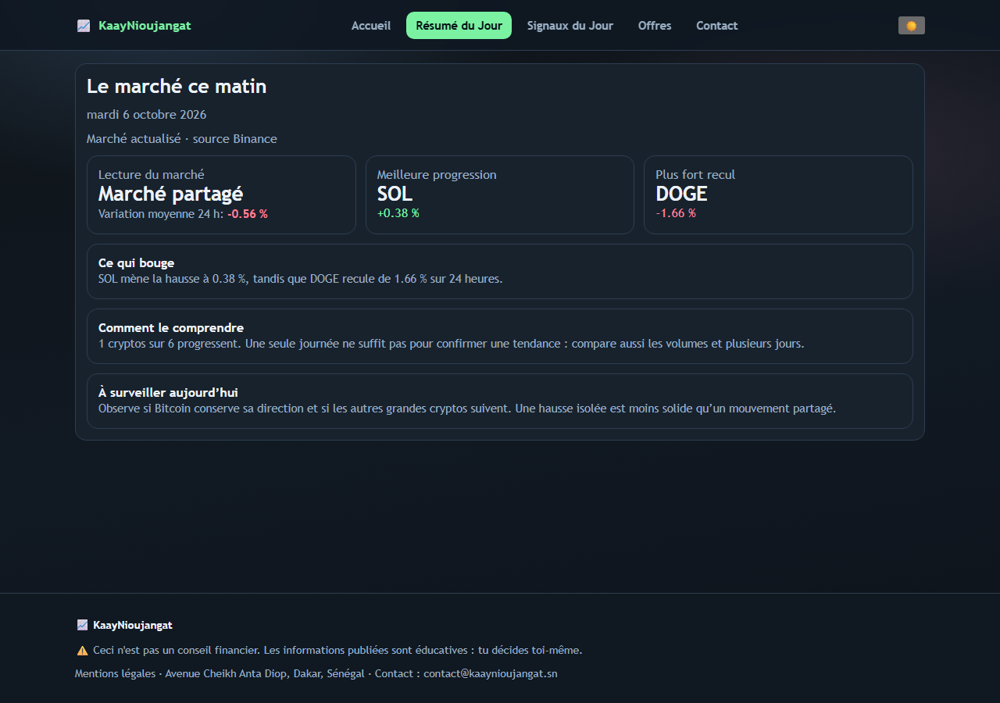
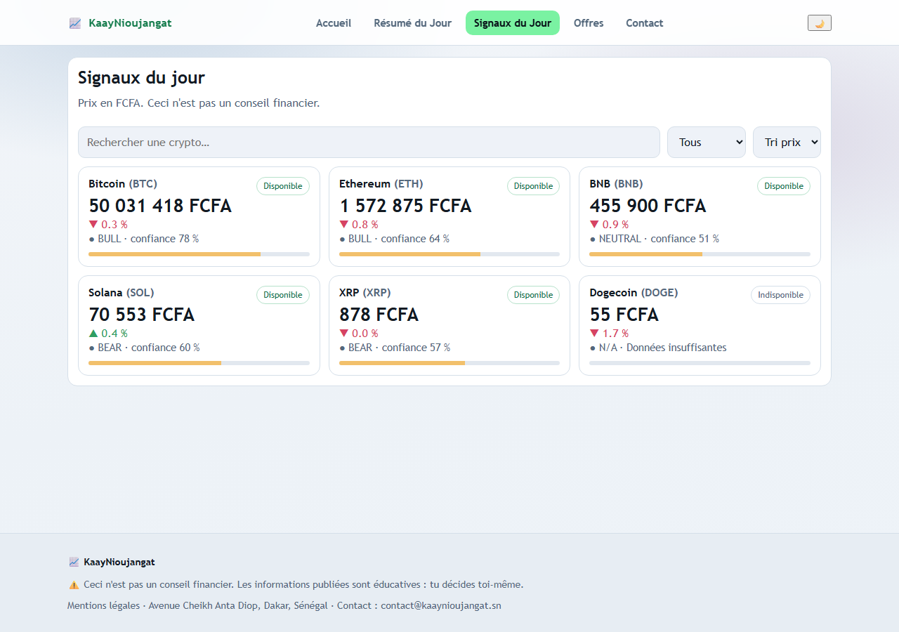
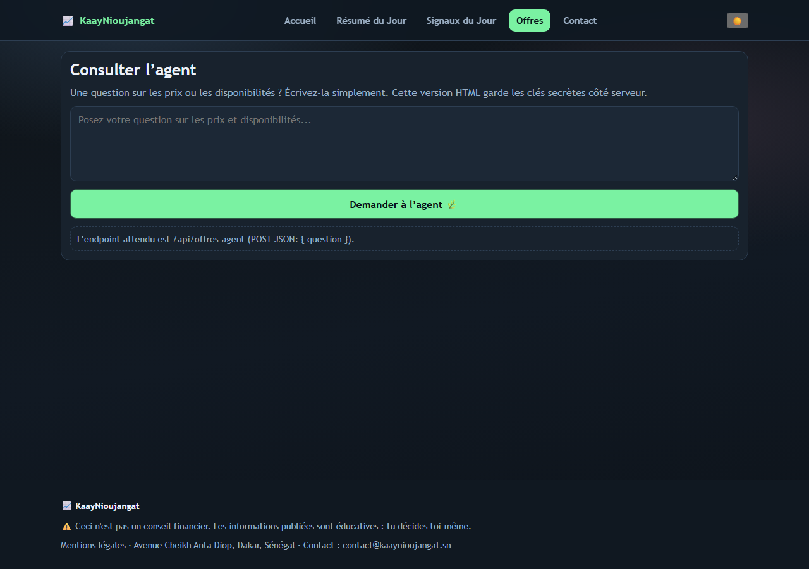
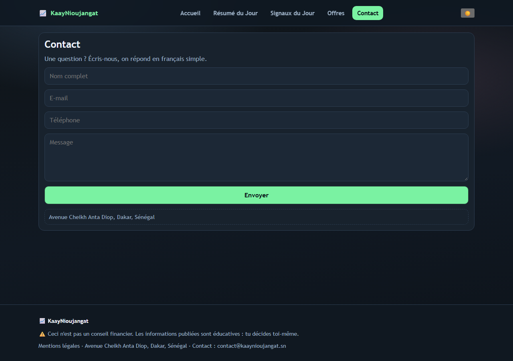
.claude/settings.json écrit sur le disque hors session, car Claude refuse de modifier ses propres protections ; la route de l'agent n'a pas été testée contre le vrai Dify ; le bouton « Copier » ne contient pas de prix par crypto (écart avec ma demande)./model opusplan (le modèle affiché au lancement est Sonnet 5.5, réglage inchangé), la mémoire utilisateur ~/.claude/CLAUDE.md, le retour arrière /rewind, /status (non capturé).claude -p. Certaines lignes visibles en session interactive (demandes de permission, « Skill … Successfully loaded ») n'apparaissent donc pas.kaaynioujangat-html.html si je le décide./kaay-brand a été écrite directement, sans le jeu de questions-réponses de l'atelier.--add-dir) plutôt qu'en coupant les protections..env est ignoré par git, Claude ne le voit pas, et la clé n'atteint pas le navigateur (E09). Claude ne modifie pas non plus ses propres règles sans mon accord, ce qui est le comportement voulu.